宝の拡張：入門ルールブック
原題: The Marauder Expansion — Learning to Play／会話調の解説と図解例を中心とした入門ガイド。厳密なルール文言は宝の拡張（法典編）を参照。
訳語について
本拡張の派閥名「百獣王国」「甲鉄衛団」、および能力名・コンポーネント名は、既訳の
宝の拡張（法典編）および
用語集の訳語に準拠している。
百獣王国
森のただ一つの声であることを主張する百獣王国は、あらゆる異論を踏みつぶすことで権力を固めようとする。彼らは、自分たちが支配し、かつ敵の駒が一切ない開拓地がどれだけ多いかに基づいて得点する――これを「圧政」と呼ぶ。彼らの群れを率いるのは「覇王」、気まぐれな「気質」によってそのターンにできることが変わる、戦士にして大衆扇動家である。百獣王国はそびえる「財宝庫」にアイテムを積み上げることで力を増し、「統率」と「武勇」を高めて、より多くのアクションを行い、より多くの兵士を引き寄せる。それでも足りなければ、火を持った「暴徒」を煽動して森を焼かせることもできる。
原書 p.1
概要
百獣王国にはたった1体の「覇王」がいる。覇王は戦闘以外では除去されない兵士で、自分（百獣王国）のターン以外で移動することはなく、「任命」アクション以外の方法で地図上に配置されることもない。
百獣王国はアイテムをクラフトするたびに、「商売蔑視」を発揮する。そのアイテムを取得してカードに記載された勝利点を一切得ないか、そのアイテムを永久に除去して記載された勝利点を得るかのいずれかを選ぶ。アイテムを取得すれば力（統率・武勇）が増し、除去すれば即座に得点できる――どちらを取るかが悩ましい。
ヒント
ただし百獣王国は「略奪者」でもある。自分のターンに戦闘で敵の「クラフトしたアイテム」の枠からアイテムを奪えるので、自分でアイテムをクラフトしなくても財宝庫を満たせる場合がある（詳しくは
法典編 14.2.5を参照）。
鳥歌フェイズ
鳥歌フェイズには、以下の手順を順番に行う。
- 破壊。 暴徒トークンのある各開拓地で、敵の建物・トークンをすべて除去する。そこに廃墟があれば、そこからアイテムを1つ取り、自分の財宝庫の対応するトラックの一番左の空いている枠に置く。最後のアイテムを取った場合は、その廃墟を除去する。すべての暴徒を解決したら、暴徒ダイスを1回振る。出たスートと一致し、暴徒トークンのある開拓地に隣接していて、まだ暴徒のいない開拓地に、暴徒トークンを1つ置かなければならない（そのような開拓地がなければ置かない）。
- 徴募。 自分の武勇値に等しい数の兵士を、覇王のいる開拓地に置く。その後、要塞のある各開拓地に、要塞1つにつき兵士を1体ずつ置く。
- 任命。 覇王が地図上にいなければ、いずれかの開拓地にいる百獣王国の兵士1体を覇王と置き換えなければならない。それができなければ、任意の開拓地に覇王を配置する。
- 気質の選択。 現在の気質カードを、自分の財宝庫にあるアイテムの種類が示されていない別の気質カードに置き換えなければならない。「豪奢」の気質で、かつ財宝庫に持っていないアイテム種類が示された気質カードが選べない場合は、「豪奢」のままでよい。
破壊の例
暴徒トークンのある開拓地に、鷲巣王朝の止まり木と木材トークンがある。止まり木と木材トークンを両方除去する。その開拓地に廃墟があれば、そこから槌を1つ取り、財宝庫の武勇トラックに置く。これで武勇が1から2に上がり、廃墟にアイテムが残っていなければその廃墟も除去して、勝利点を2点得る。
暴徒拡散の例
暴徒ダイスを振り、狐の面が出た。暴徒のある開拓地に隣接する狐の開拓地で、まだ暴徒のない開拓地が2つあったので、そのいずれかに新しい暴徒トークンを置く。
補足
最初のターンには暴徒トークンがまだ地図上にないので、このステップは何もせず終わる。
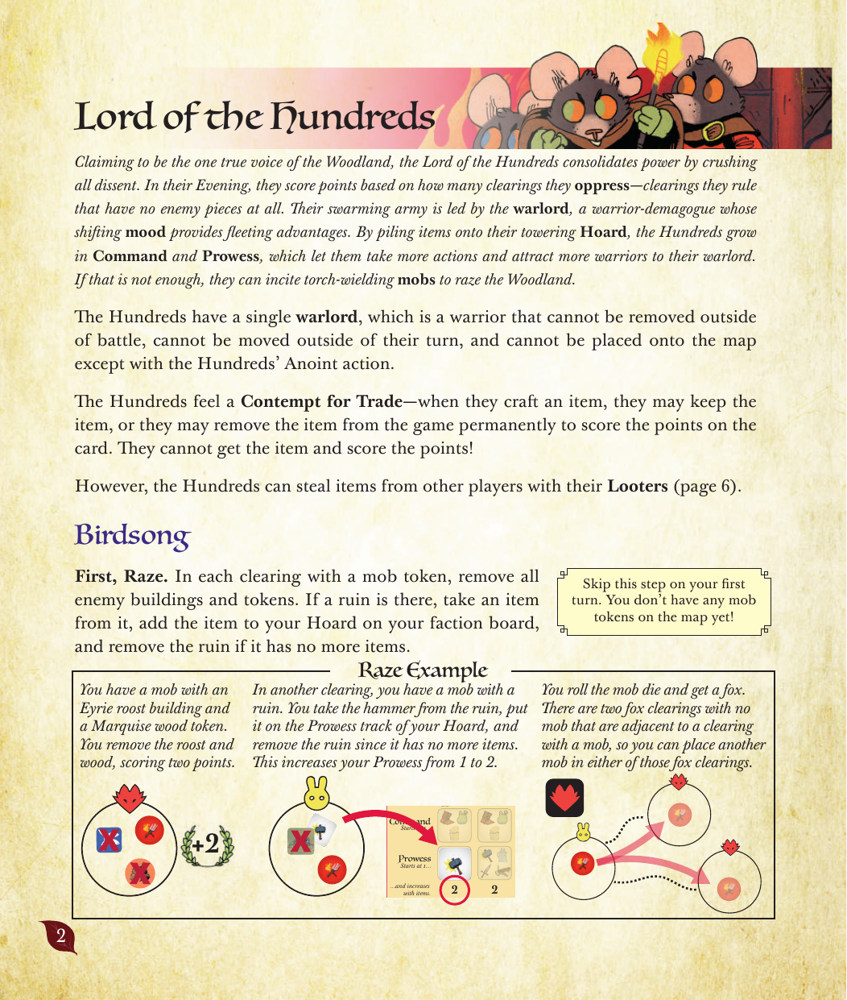
原書 p.2
アイテムを獲得するたびに、それが示すアイテムの種類に応じて財宝庫の対応するトラックが伸びる。靴・革袋・弩は統率を、槌・茶・剣・硬貨は武勇を増やす。
暴徒ダイスを解決したら、出目に関係なく1回だけロールする。ロールしたスートに一致し、すでに暴徒のある開拓地に隣接していて、まだ暴徒のない開拓地に、暴徒トークンを1つ置く。一つの開拓地に複数の暴徒は置けない。
ヒント
要するに、暴徒は森林連合の支援トークンのように広がっていく。ただし支援トークンとは違って、置けるマッチする開拓地がなければ暴徒は配置しない。
第二に、徴募。自分の武勇値に等しい数の兵士を覇王のいる開拓地に置く。その後、要塞のある開拓地それぞれに、要塞1つにつき兵士を1体ずつ置く。
徴募の例
自分のターン最初のターンなので、覇王の開拓地には兵士をまだ1体置く――武勇が1だからである。アイテムを獲得していくと武勇が上がり、配置できる兵士の数も増える。要塞のある開拓地には自分が要塞を建てるたびに、その開拓地にも兵士を1体ずつ置く。
第三に、任命。覇王が地図上にいなければ、いずれかの開拓地の百獣王国の兵士1体を覇王と置き換える。それすら不可能なら（百獣王国の兵士がどこにもいない）、任意の開拓地に覇王を配置しなければならない。
第四に、気質の選択。あなたの覇王は、自分のターンの間だけ持続する気まぐれな性質――「気質」――に動かされている。現在の気質カードは、保持しているアイテムを示していない別の気質カードに置き換える。一つの気質は、財宝庫の全種類のアイテムが入手済みでなければ常に選べる。「豪奢」のままでよい唯一の例外は、その時点で別の気質を選べない場合だけである。
気質選択の例
現在の気質が「豪奢」で、財宝庫に硬貨があるので「冷徹」の革袋アイコンは選べない。革袋を財宝庫に持っていなければ「冷徹」を選んでよい。
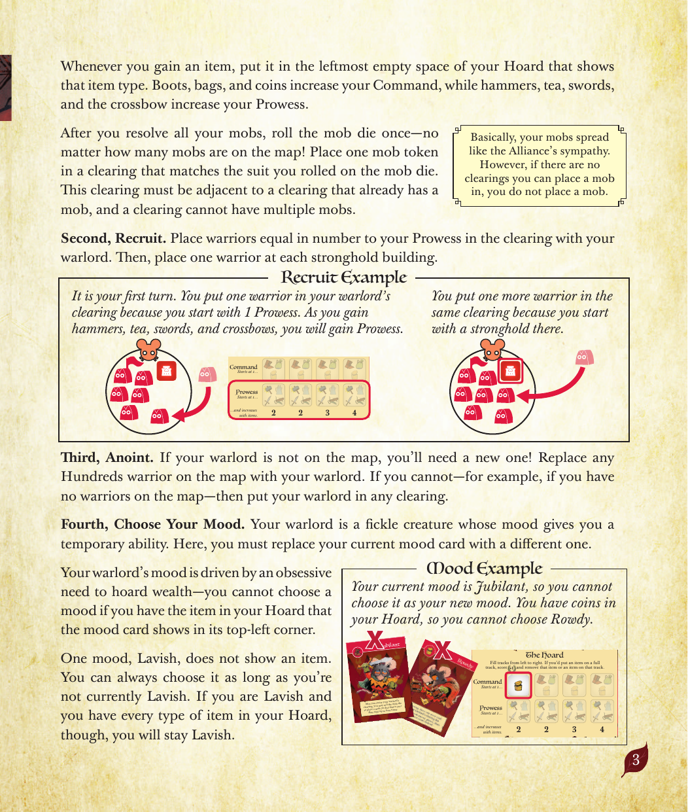
原書 p.3
昼光フェイズ
第一に、クラフト。これは標準的なクラフトアクションで、要塞を発動してカードをクラフトする。
クラフトの例
弩を持っていて、それは自分の武勇トラックの一番左の点線にある。「商売蔑視」によって、このアイテムを取得せずクラフトしたカードに示された得点を見送れば、自分の点を実際に得るのではなく、財宝庫にそのアイテムを置く。
しかし「精密技師」のような効果による追加のクラフト得点は通常どおり得られる。
補足
最初のターンは要塞を1つしか持っていないので、行えるクラフトは1回だけである。要塞を建てるか奪うほど、選べるカードが増える。
第二に、百獣の統率。自分の統率値までの回数、以下のアクションを任意の順序で行ってよい。
- »移動： 移動を1回行う。
- »戦闘： 戦闘を開始する。
- »建設： カードを1枚消費して、自分が支配する一致する開拓地に要塞を1つ配置する。
第三に、覇王の進軍。自分の武勇値までの回数、このアクションを行ってよい。覇王を、任意の数の百獣王国の兵士とともに移動させ、その後、覇王のいる開拓地で戦闘を行ってよい。
覇王の進軍の例
クロスボウを持っていて武勇は2なので、覇王の進軍を2回行える。1回目の進軍では覇王だけを移動させ、戦闘しないことを選ぶ。2回目の進軍では覇王と兵士を一緒に移動させ、その後その開拓地で戦闘を行う。
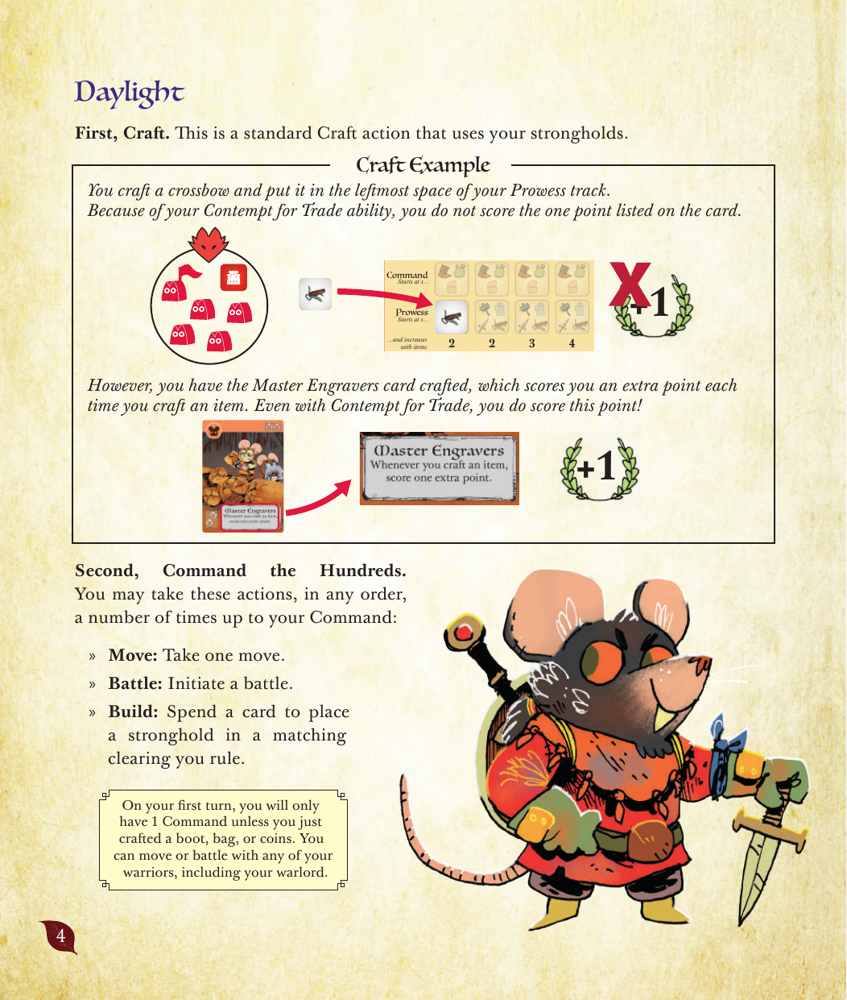
原書 p.4
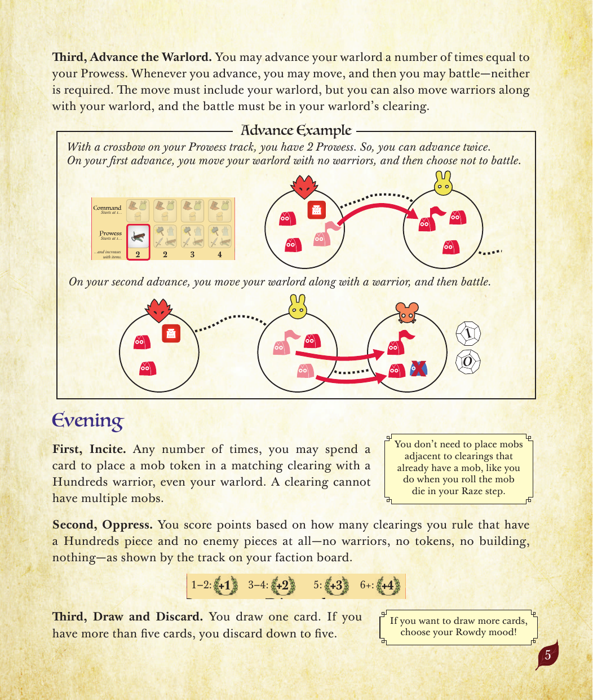
原書 p.5
夕闇フェイズ
第一に、煽動。何度でも、カードを1枚消費して、暴徒トークンのない、百獣王国の兵士（覇王を含む）がいる一致する開拓地に暴徒トークンを1つ置いてよい。
ヒント
暴徒をすでに暴徒のある開拓地に隣接させる必要はない。鳥歌フェイズの暴徒ダイスのときとは違うルールである。
第二に、圧政。百獣王国の駒があり、敵の駒が一切ない開拓地を支配している数に基づいて勝利点を得る。1〜2開拓地なら1点、3〜4開拓地なら2点、5開拓地なら3点、6開拓地以上なら4点を得る。
第三に、カードを引いて捨てる。カードを1枚引く。手札が5枚を超えていれば5枚まで捨てる。
圧政の例
百獣王国の兵士または覇王がいて、敵の建物・トークン・兵士が一切ない開拓地を数える。合計4開拓地あったので、2点を得る。
覇王の気質
気質はそれぞれ、覇王のいる開拓地での戦闘や、覇王自身の行動に強い影響を与える。原書では8種類の気質がそれぞれアイテムアイコンとともに図解されている。
- »辛辣（槌）： 覇王のいる開拓地での戦闘で、ロールの前に、覇王のいる開拓地とそれに隣接する開拓地から任意の数の暴徒トークンを除去してよい。除去した暴徒トークンの数に等しい数の兵士を覇王のいる開拓地に置く。
- »尊大（茶）： このターンは「覇王の進軍」を「百獣の統率」より先に行う。
- »歓喜（靴）： 覇王のいる開拓地で「煽動」を行うとき、置いた後さらに最大4回まで暴徒ダイスを振り、暴徒トークンのある任意の開拓地に隣接する一致する開拓地に暴徒トークンを置いてよい。
- »豪奢（アイテムなし）： 自分の鳥歌フェイズの終了時、財宝庫から任意の数のアイテムを永久に除去してよい。除去したアイテム1つにつき、覇王のいる開拓地に兵士を2体置く。
- »冷徹（革袋）： 「覇王の進軍」で移動と戦闘の両方を行ったとき、さらに覇王を移動させるか、覇王のいる開拓地で戦闘を行うかを選んでよい。
- »乱暴（弩）： 夕闇フェイズにカードをもう1枚引く。覇王のいる開拓地に敵駒が3つ以上あれば、代わりに2枚多く引く。
- »頑固（硬貨）： 覇王のいる開拓地での戦闘で、自分が受ける最初のヒットを無視する。
- »憤怒（剣）： 覇王のいる開拓地での戦闘で攻撃側のとき、追加ヒットを1つ与える。
注意
気質は財宝庫にあるアイテムの種類によって選べる範囲が決まる。財宝庫が満ちるほど、気質の選択肢は狭くなる――百獣王国の蓄財には代償がある。
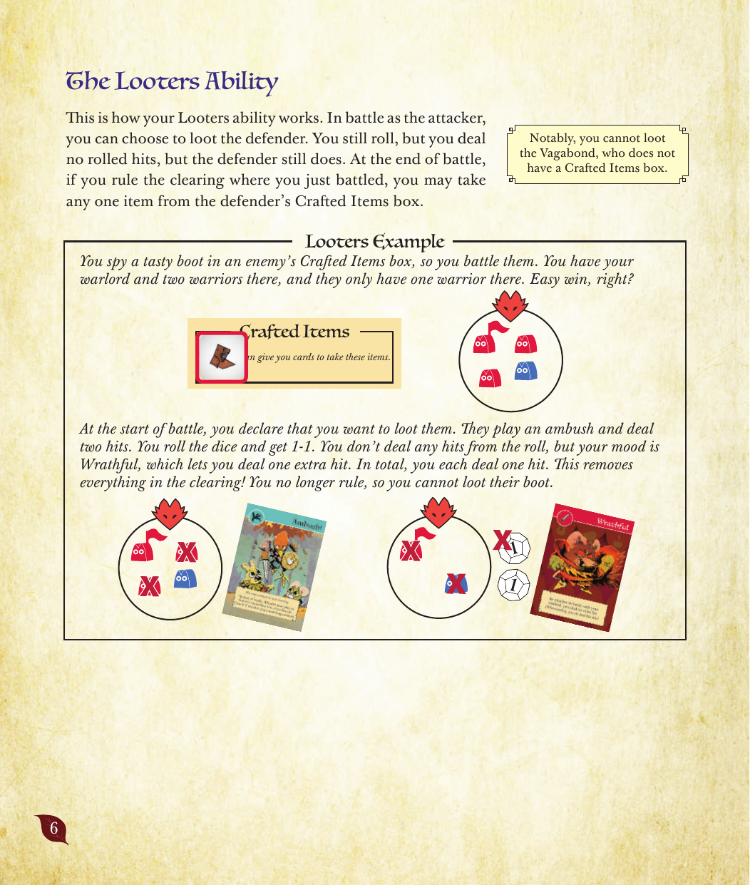
原書 p.6
略奪者の能力
百獣王国は攻撃側として戦闘する際、「ルーターズ」と呼ばれる略奪者の能力を持つ。防御側の「クラフトしたアイテム」の枠にアイテムが1つでもあれば、それでも戦闘を最後まで通常どおりに行うか、略奪することを選んでよい。
注意
放浪部族から略奪することはできない。
略奪を選んだ場合、ロールによるヒットは一切与えない。ただし防御側は通常どおりロールによるヒットを与えるし、自分は「憤怒」の気質などによる追加ヒットを引き続き与えられる。戦闘の終了時に自分がその開拓地を支配していれば、防御側の「クラフトしたアイテム」の枠からアイテムを1つ取る。
略奪の例
鷲巣王朝のクラフトしたアイテムの枠に剣がある。戦闘を仕掛けて略奪を宣言する。ロールによるヒットは自分は与えないが、鷲巣王朝は通常どおりヒットを与えてくる。戦闘後にこの開拓地を支配していれば、鷲巣王朝の剣を奪い取り、自分の財宝庫に置く。
ヒント
ルーターズはクラフトせずにアイテムを増やせる、百獣王国にとって有力な手段である。財宝庫を満たして統率・武勇を伸ばすために積極的に狙うとよい。
甲鉄衛団
甲鉄衛団は「忠実な騎士団」であり、かつて失われた秘宝を森から取り戻すために帰還した。彼らはまず樹林から秘宝を「発掘」し、その秘宝を対応する種類の「宿営地」へ移し、最後に「回収」して得点する。彼らは「従者団」と呼ばれる森の住人のカードを編成し、それぞれの列でアクションを行う。秘宝を発掘・回収するたびに、それを行うために使った従者団のカードを失う可能性があるため、慎重な計画とリスク管理が求められる。
概要
甲鉄衛団は像・石板・宝飾品という3種類、合計12個の秘宝トークンを追い求める。各種類は4個ずつある。秘宝は表面には種類だけが示され、裏面には1・2・3・3のいずれかの価値が示されている――裏返して初めて価値がわかる。
甲鉄衛団は宿営地を3つ持つ。各宿営地は両面に異なる秘宝の種類が示されている。クラフトは、いずれかの種類の宿営地を発動して行う。
補足
甲鉄衛団は「忠実な騎士」である。戦闘の開拓地に秘宝が少なくとも1つ、かつ甲鉄衛団の兵士が少なくとも1体あれば、受ける最初のヒットを無視する（奇襲を受けた場合は奇襲によるヒットを1つだけ無視する）。また開拓地間を移動する際、移動させる甲鉄衛団の兵士1体につき秘宝を1個一緒に移動させてよい。
ヒント
敵が自分の秘宝を除去すると、それを「戦利品」として任意の樹林に表向きで置く――そして自分は追加でもう1点を得る（合計2点）。秘宝を奪われても無駄にはならない。
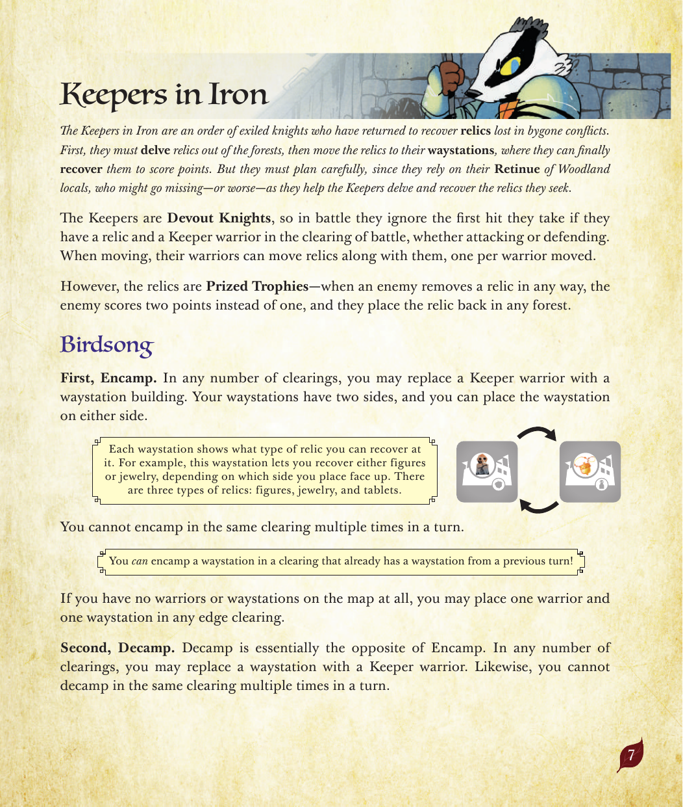
原書 p.7
鳥歌フェイズ
第一に、野営。1開拓地につき1回、甲鉄衛団の兵士1体を宿営地1つに置き換えてよい。いずれの開拓地にも兵士も宿営地もない場合は、代わりに地図端の任意の開拓地に宿営地1つと兵士1体を置く。宿営地は表向き・裏向きのどちらで配置してもよい。
ヒント
宿営地は裏向きに置けば、相手にどちらの秘宝の種類で回収するつもりか読みにくくできる。
第二に、野営解除。1開拓地につき1回、宿営地1つを甲鉄衛団の兵士1体に置き換えてよい。
第三に、徴募。何度でも、カードを1枚消費して、一致する宿営地に兵士を2体置いてよい。
野営の例
兵士のいる開拓地で、その兵士1体を宿営地1つに置き換える。宿営地は表向き・裏向きのどちらでも好きな面を選んでよい。
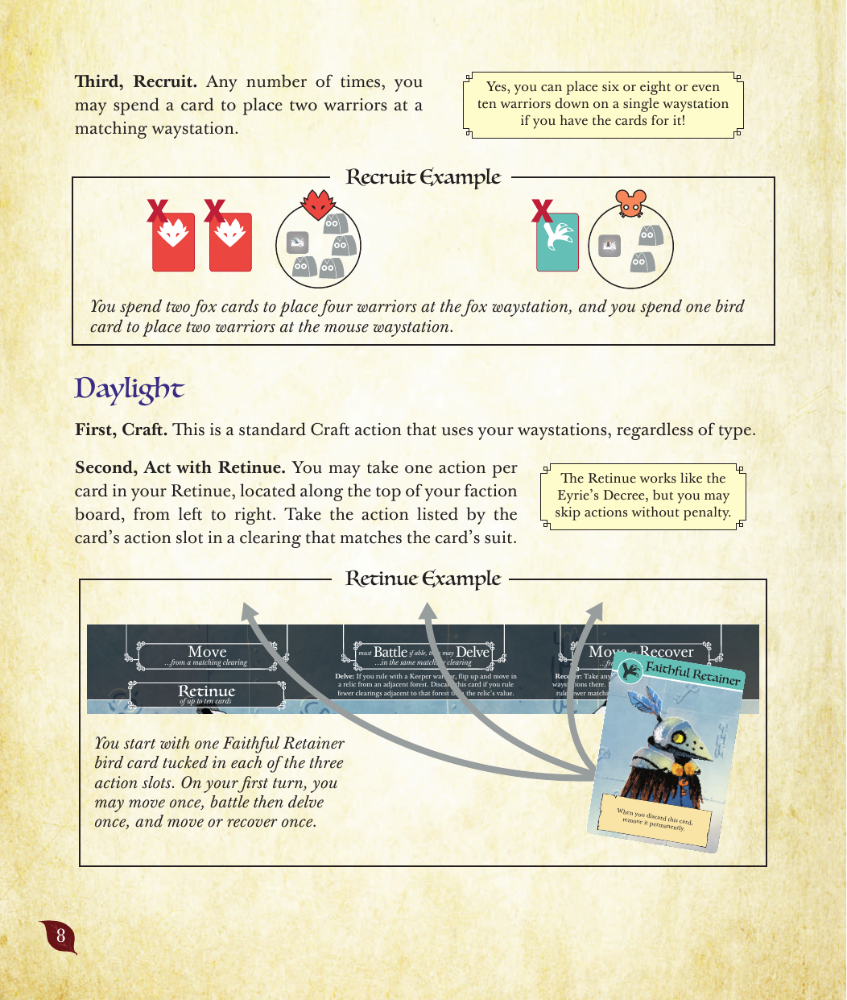
原書 p.8
昼光フェイズ
第一に、クラフト。これは標準的なクラフトアクションで、いずれかの種類の宿営地を発動して行う。
第二に、従者団での行動。自分の従者団の一番左の列から右へ向かって、その列にあるカード1枚につき、その列に対応するアクションを任意の順序で行ってよい。
ヒント
列の名前は「移動」「戦闘してから発掘」「移動または回収」の3つで、それぞれの列に差し込んだカードの枚数だけそのアクションを行える。
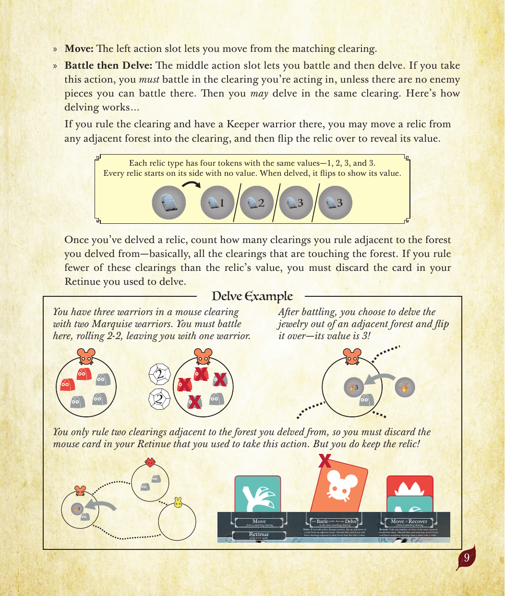
原書 p.9
移動
左の列にカードがあれば、それと一致するスートの開拓地から移動を1回行える。
戦闘してから発掘
中央の列のカードでは、まずそのカードのスートに一致する開拓地を選ぶ。そこに自分が戦闘できる敵駒があれば、必ず戦闘を開始しなければならない。その後、その開拓地を支配しており、かつそこに甲鉄衛団の兵士が少なくとも1体いれば（戦闘していなくても）、以下の手順で「発掘」してよい。
- 秘宝の表向きと移動。 隣接する樹林にある秘宝を、まだ価値が見えていなければ表向きにし、それを選んだ開拓地へ移動させる。
- 捨てるかどうかの確認。 発掘した樹林に隣接する、自分が支配する開拓地の数を数える。その数が秘宝の価値より少なければ、このアクションを行うために使った従者団のカードを捨てなければならない。
発掘の例
鼠の開拓地で戦闘してから発掘する。隣接する樹林の秘宝を表向きにすると価値は3だった。この樹林に隣接する、自分が支配する開拓地は1つしかないので、3より少ない――このアクションに使った従者団のカードを捨てなければならない。
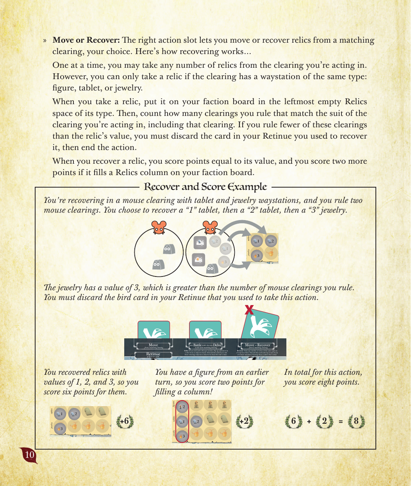
原書 p.10
移動または回収
右の列のカードでは、そのカードのスートに一致する開拓地を選ぶ。そこから移動を1回行うか、以下の手順で秘宝を「回収」する。
- 秘宝の取得。 その開拓地にある宿営地の種類と同じ種類の秘宝を1つ除去し、自分の派閥ボードの対応する秘宝枠の一番左の空いている枠に置く。
- 得点。 その秘宝の価値に等しい勝利点を得る。秘宝の列を1つ完成させた場合は、追加で勝利点を2点得る。
- 捨てるかどうかの確認。 秘宝を回収している開拓地のスートと一致する、自分が支配する開拓地の数を数える。その数が秘宝の価値より少なければ、この「回収」アクションを終了し、このアクションを行うために使った従者団のカードを捨てなければならない。そうでなければ、ステップ1（秘宝の取得）に戻るか、この「回収」アクションを終了してよい。
回収の例
鼠の宿営地と兎の宿営地がある開拓地で回収する。値1の鼠の秘宝、値2の兎の秘宝、値3の兎の秘宝を順に回収する。この開拓地のスートと一致する、自分が支配する開拓地は2つしかない。最初の秘宝（値1）と2番目（値2）は問題なく回収できるが、3番目（値3）は2より大きいので、このアクションに使ったカードを捨てて回収を終える。秘宝の値1・2・3の合計で6点、さらに「3」の秘宝が2個揃っていれば列の完成ボーナスで2点が追加される。
ヒント
高い価値の秘宝を安全に回収するには、その開拓地のスートを多く支配しておく必要がある。背伸びして手を出すと、せっかくの従者団カードを失うことになる。
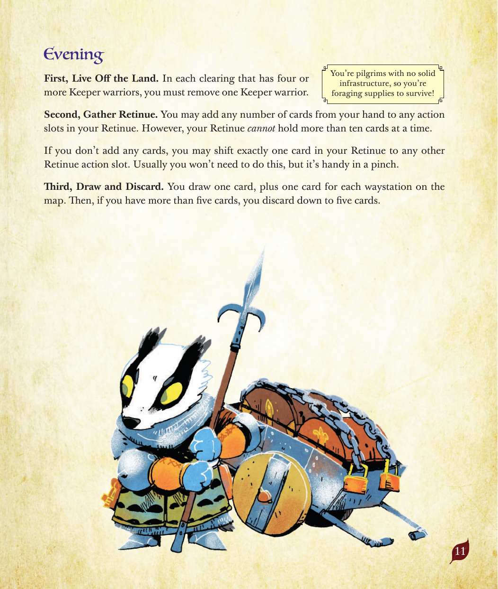
原書 p.11
夕闇フェイズ
第一に、現地調達。甲鉄衛団の兵士が4体以上いる各開拓地から、甲鉄衛団の兵士を1体除去しなければならない。
第二に、従者団の編成。手札から任意の数のカードを任意の従者団の枠に加えてよい。または従者団内の1枚のカードを別の枠に移してよい。従者団は10枚を超えるカードを保持できない。
第三に、カードを引いて捨てる。カードを1枚引き、さらに地図上の宿営地の数に等しい枚数を追加で引く。手札が5枚を超えていれば5枚まで捨てる。
ヒント
宿営地が多いほどカードを多く引けるので、序盤に宿営地を増やすことは長期的なカードの引きやすさにつながる。
雇われ者
雇われ者は、勝っている側に肩入れする傭兵集団である。栄光と名声を約束されてその場の盟主に引き寄せられるが、戦いが長引くと不満を募らせ、やがて新しい主君へと寝返ってしまう。1ゲームには必ずちょうど3体の雇われ者を加える。多くの雇われ者は特定の派閥に結び付いており、その派閥と同じゲームでは使えない（例えば、猫野侯国の雇われ者「森林の巡視団」は、猫野侯国とは同じゲームでプレイできない）。中立の雇われ者は他のROOT製品に含まれ、特定の派閥との結び付きを持たない。
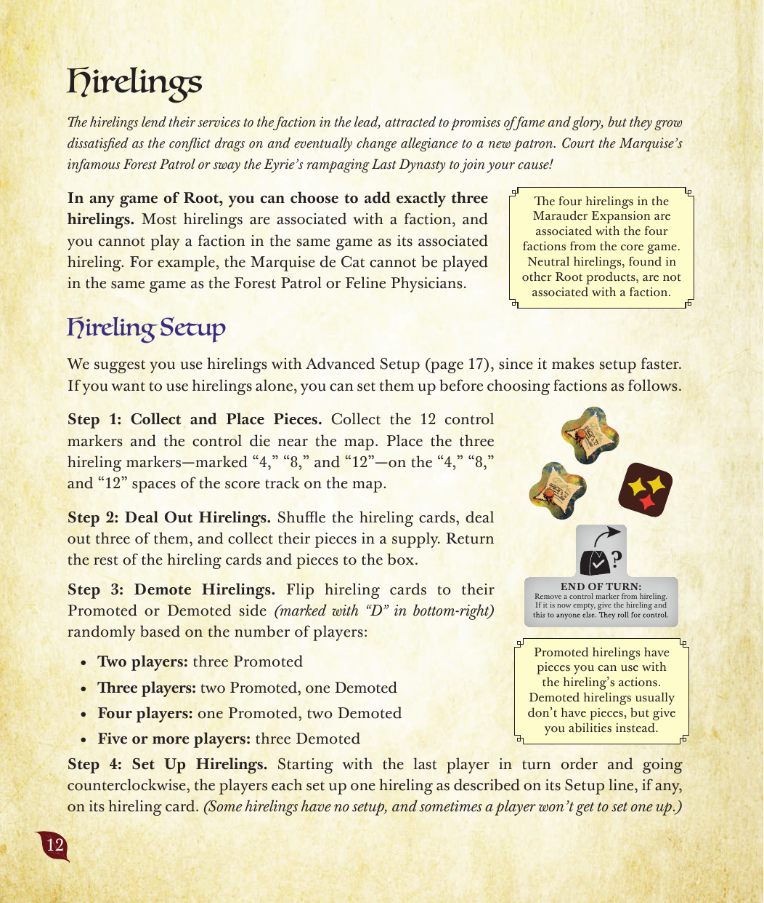
原書 p.12
雇われ者の準備
雇われ者を使う場合は、高度な準備（17ページ）と組み合わせると準備が速くなるのでおすすめである。雇われ者だけを使いたい場合は、派閥を選ぶ前にあらかじめ準備しておいてもよい。
- 駒の収集と支配権ダイスの準備。 12個の支配権マーカーを集め、地図のそばに置く。3つの雇われ者マーカー――「4」「8」「12」――を、得点トラックの「4」「8」「12」の位置に置く。
- 雇われ者カードの配分。 雇われ者カードをシャッフルし、3枚を選んで脇に置き、残りはすべて箱に戻す。
- 雇われ者の降格。 雇われ者カードを表向きにし、人数に応じてランダムに「昇格」面か「降格」面（カード右下に「D」と表示）にする。
- ・2人プレイ：3枚すべて昇格。
- ・3人プレイ：2枚昇格、1枚降格。
- ・4人プレイ：1枚昇格、2枚降格。
- ・5人以上プレイ：3枚すべて降格。
- 雇われ者のセットアップ。 手番順で最後のプレイヤーから反時計回りに、各プレイヤーが雇われ者カードに記された準備手順（あれば）に従って雇われ者を1体ずつセットアップする（雇われ者によっては準備手順がなく、誰も準備しない場合もある）。
ヒント
昇格面の雇われ者駒は、支配しているプレイヤーがその雇われ者のアクションを使える。降格面の雇われ者は普通は駒を持たず、代わりに能力だけを支配者に与える。
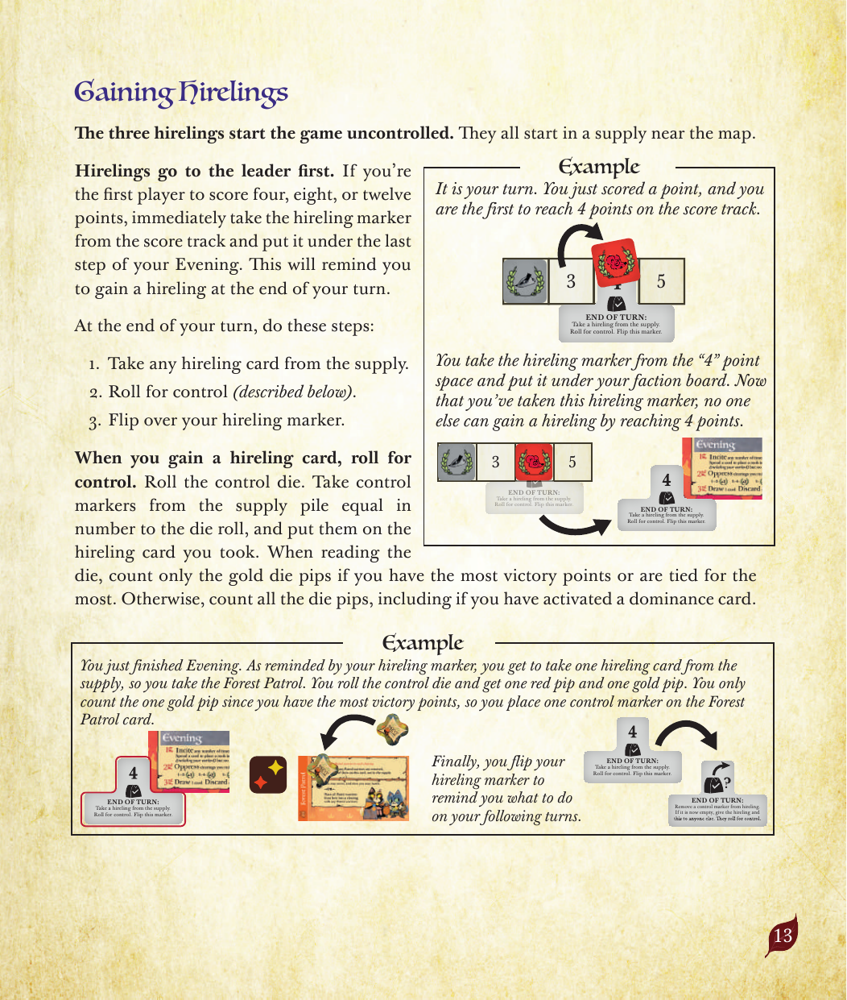
原書 p.13
雇われ者の支配権を得る
3体の雇われ者は、誰にも支配されていない状態でゲームが始まる。彼らは「勝っている側」に付く――誰よりも先に勝利点4点・8点・12点に到達したプレイヤーが、その雇われ者マーカーに対応する雇われ者の支配権を得る。
- 支配権を得る条件を満たす。 自分が最初に4点・8点・12点のいずれかに到達したら、即座にその点数の雇われ者マーカーを得点トラックから取り、自分のプレイヤーボードの下に置く。これは自分の夕闇フェイズの最後のステップとして行うことを忘れないためのリマインダーになる。
- 雇われ者カードを取り、支配権ダイスをロールする。 ターンの終わりに、雇われ者カードを1枚供給から取る。支配権ダイスをロールし、出目に等しい数の支配権マーカーを、取った雇われ者カードの上に置く。最も多くの勝利点を持つ（または同点で並ぶ）プレイヤーが複数いる場合は金色のピップだけを数え、そうでなければすべてのピップを数える（支配カードを発動している場合も含む）。
- 雇われ者マーカーを裏返す。 雇われ者マーカーを裏返して、自分が次のターン以降に何をすべきかを示す面にする。
支配権獲得の例
自分のターンに勝利点4点に到達した最初のプレイヤーになったので、すぐに「4」の雇われ者マーカーを得点トラックから取り、自分のプレイヤーボードの下に置く。夕闇フェイズの最後に、雇われ者カードを1枚取り、支配権ダイスをロールして金色1・通常1のピップが出る。このとき最多得点者なので金色のピップだけを数え、支配権マーカーを1個だけそのカードに置く。最後に雇われ者マーカーを裏返し、次のターンの手順を思い出せるようにする。
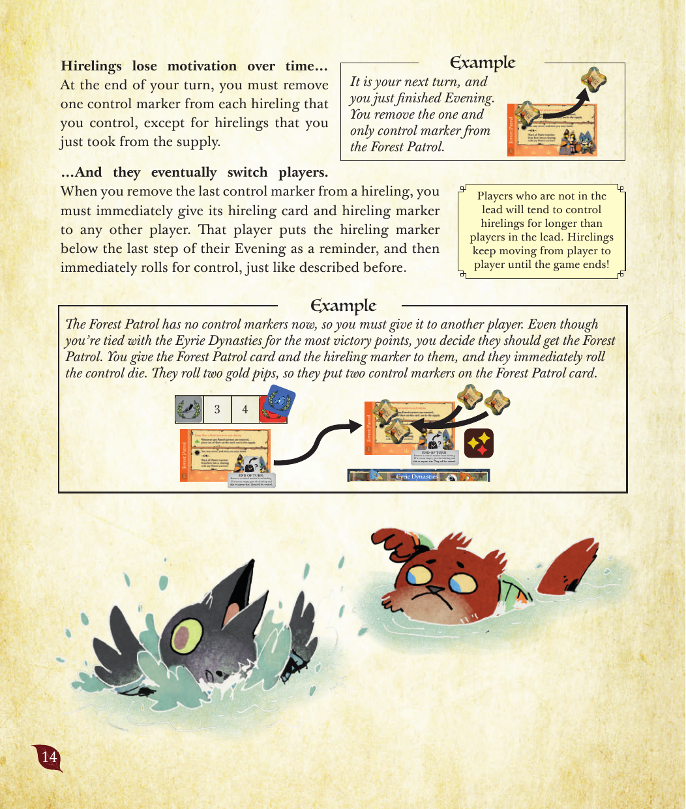
原書 p.14
雇われ者は時間とともに意欲を失う
自分のターンの終わりに、自分が支配する各雇われ者から支配権マーカーを1個除去しなければならない。ただし、その雇われ者をちょうど自分のターンに取ったばかりであれば除去しない。
雇われ者から最後の支配権マーカーを除去したら、即座にその雇われ者カードと雇われ者マーカーを他のプレイヤーに渡さなければならない。受け取ったプレイヤーは、自分の夕闇フェイズの最後のステップとして行うリマインダーとして、雇われ者マーカーを自分のプレイヤーボードの下に置き、前述のとおり支配権ダイスをロールする。
ヒント
リードしていないプレイヤーほど雇われ者を長く保持する傾向がある。雇われ者はゲームが終わるまで、リードしていないプレイヤーへと渡り歩いていく。
意欲喪失の例
次の自分のターンになり、夕闇フェイズを終えたところである。自分が支配する唯一の雇われ者から、唯一残っていた支配権マーカーを除去する。その雇われ者には支配権マーカーがなくなったので、誰か他のプレイヤーに渡さなければならない。勝利点で同点のプレイヤーがいるので、その雇われ者を渡し、すぐに支配権ダイスをロールさせる。2個の金色のピップが出たので、支配権マーカーを2個その雇われ者カードに置く。
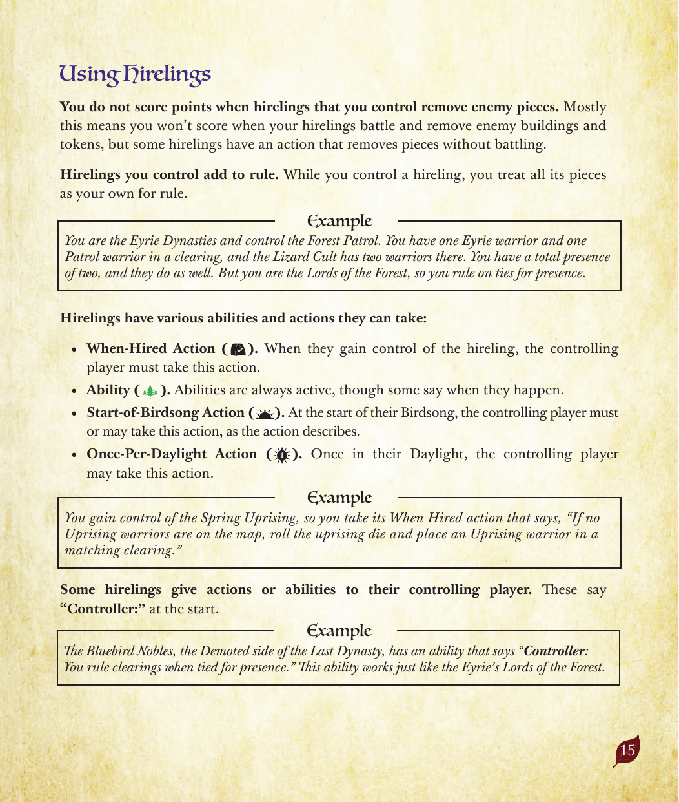
原書 p.15
雇われ者の使い方
雇われ者を支配していても、その雇われ者が敵の駒を除去するときに自分が得点することは基本的にない。多くの場合、雇われ者が戦闘して敵の建物やトークンを除去しても得点にはならない。ただし一部の雇われ者は、戦闘せずに駒を除去するアクションを持っており、その場合は得点する。
雇われ者を支配している間、そのすべての駒を自分の駒として支配判定に数える。
支配判定の例
鷲巣王朝で「森林の巡視団」を支配している。ある開拓地に鷲巣の兵士と巡視団の兵士が両方おり、蜥蜴教団の兵士も2体いる。合計の駒数で並んでいるが、自分が「森の支配者」（タイブレークの優先権）を持っているので、その開拓地を支配する。
雇われ者は次のような様々なアビリティ・アクションを持つ。
- »獲得時アクション： 雇われ者の支配権を得たとき、支配者は必ずこのアクションを行う。
- »アビリティ： 常に有効。発生のタイミングが決まっているものもある。
- »鳥歌フェイズ開始時アクション： 各鳥歌フェイズの開始時に、支配者は必ず（または任意で）このアクションを行う。
- »昼光フェイズ1回限りアクション： 各昼光フェイズに1回、支配者がこのアクションを行ってよい。
補足
一部の雇われ者は、アクションやアビリティの効果を支配者自身に与える（その雇われ者の駒が自分で行うのではない）。これらのカードには「支配者：」という見出しが付いている。
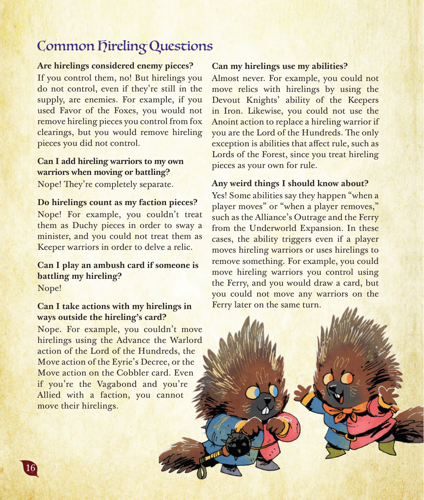
原書 p.16
雇われ者に関するよくある質問
- 雇われ者の駒は敵として扱われるか？
- 自分が支配していなければ、支給庫にあるだけでも敵として扱う。
- 自分の雇われ者の兵士を自分の派閥の兵士と一緒に移動・戦闘させられるか？
- できない。完全に別物として扱う。
- 雇われ者の駒は自分の派閥駒として数えられるか？
- 数えられない。雇われ者を「貴族」を説得するための駒として使うことはできず、「秘宝を回収」するための「甲鉄衛団の兵士」としても扱えない。
- 自分の雇われ者が戦闘を受けているときに奇襲カードをプレイできるか？
- できない。
- 雇われ者カードに記載されていない方法で、自分の雇われ者を動かせるか？
- できない。例えば「百獣王国の覇王の進軍」アクション、「鷲巣王朝の勅令の移動」、「下働きの移動」では雇われ者を動かせない。これは放浪部族が派閥と「同盟」している場合でも同様である。
- 知らない用語に出くわしたらどうすればよいか？
- 「あるプレイヤーが移動したとき」「あるプレイヤーが除去したとき」のように記された一部の能力は、雇われ者の駒を移動させたり除去したりした場合にも発動する。例えば雇われ者の兵士を移動させて山の拡張の「策動」を発動させることはできるが、後の同じターン中に「渡し場」を使って雇われ者の兵士を動かすことはできない。
高度な準備
高度な準備は、経験者向けに設計された、速くて柔軟な準備方法である。本拡張には、基本ゲームのすべての派閥に加え、河・山・宝の拡張の派閥用の準備カードと、要点をまとめたサマリーカードが含まれている。高度な準備が通常の準備と異なる主な点は次のとおりである。
- »開始手札は5枚から選ぶ。 準備の開始時に各プレイヤーは5枚引き、準備の終わりに3枚を残して残り2枚をデッキに戻す。
- »派閥は限られた候補群から選ぶ。 全派閥から選ぶのではなく、少数の派閥準備カードを配り、その中からプレイヤーが選ぶ。
- »リーチを使わない。 リーチは古い派閥構成の決め方である。各高度な準備カードには右下隅にその派閥のリーチが『根の法典』と同じ形式で示されているので、派閥構成の参考に使ってもよいが、高度な準備自体ではリーチを使わない。
注意
高度な準備はゲームをより荒々しく、より変化に富んだものにする。そのため、初心者がまだ準備できていない場合は、ゲームに初心者がいるときは高度な準備の使用を推奨しない。
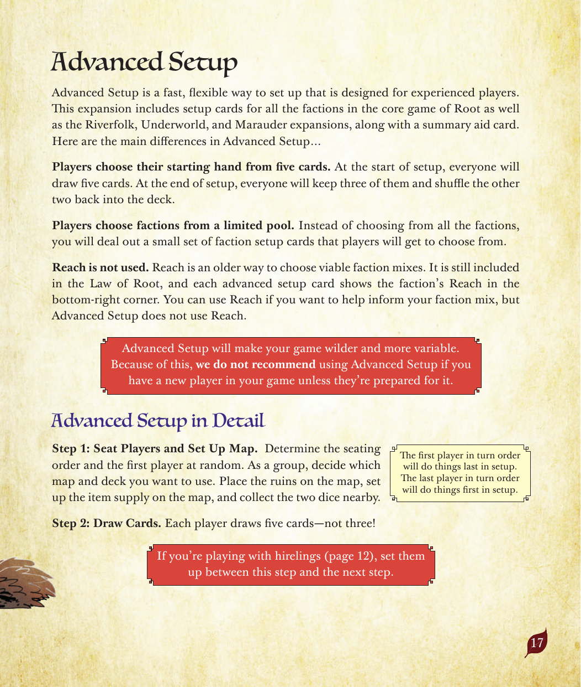
原書 p.17
高度な準備の詳細
- 座席とマップの準備。 座席順と最初のプレイヤーをランダムに決める。グループとしてどのマップとデッキを使うか決める。廃墟を地図上に配置し、アイテムの供給を地図上に準備し、近くに2個のダイスを置く。
- カードを引く。 各プレイヤーはカードを5枚引く（3枚ではない）。雇われ者（12ページ）を使う場合は、このステップとステップ3の間に準備する。
- 準備カードの配布。 すべての「主戦」準備カード（赤い名前・剣のアイコン付き）をシャッフルして1枚を取り除く。続いて、残った「主戦」派閥準備カードを「反乱」派閥準備カード（灰色の名前・剣なし）すべてと合わせてシャッフルし、プレイヤー数に等しい枚数を取り除く。合計でプレイヤー数より1枚多いカードが残るようにする。
- ・2人プレイの場合は、配る前に反乱派閥準備カードをすべて取り除く。
- ・最後に配られた準備カードが反乱派閥の場合、それを横向きにして「ロック」されていることを示す。少なくとも1つの主戦派閥が選ばれない限り選べない。
- ・放浪部族の準備カードが配られた場合は、ランダムなキャラクターカードを1枚表向きにする。そのプレイヤーが放浪部族を選んだ場合、そのキャラクターを使わなければならない。
- 派閥を選ぶ。 最初のプレイヤーから手番順に反時計回りで、各プレイヤーは候補の中から派閥準備カードを1枚選び、そこに記された手順どおりに準備して、自分の得点トラックの「0」にマーカーを置く。
- 開始手札を選ぶ。 各プレイヤーは手札から3枚を選んで残し、残りは共有デッキに表向きで戻してシャッフルする。
ヒント
派閥ボードの裏面に記載された準備手順や順序は、高度な準備では使わない。
補足
『根の法典』付録Aと高度な準備のサマリーカードには、ランドマークカードや他のROOT製品のクロックワークボットの派閥のような追加コンポーネントの準備手順も記載されている。
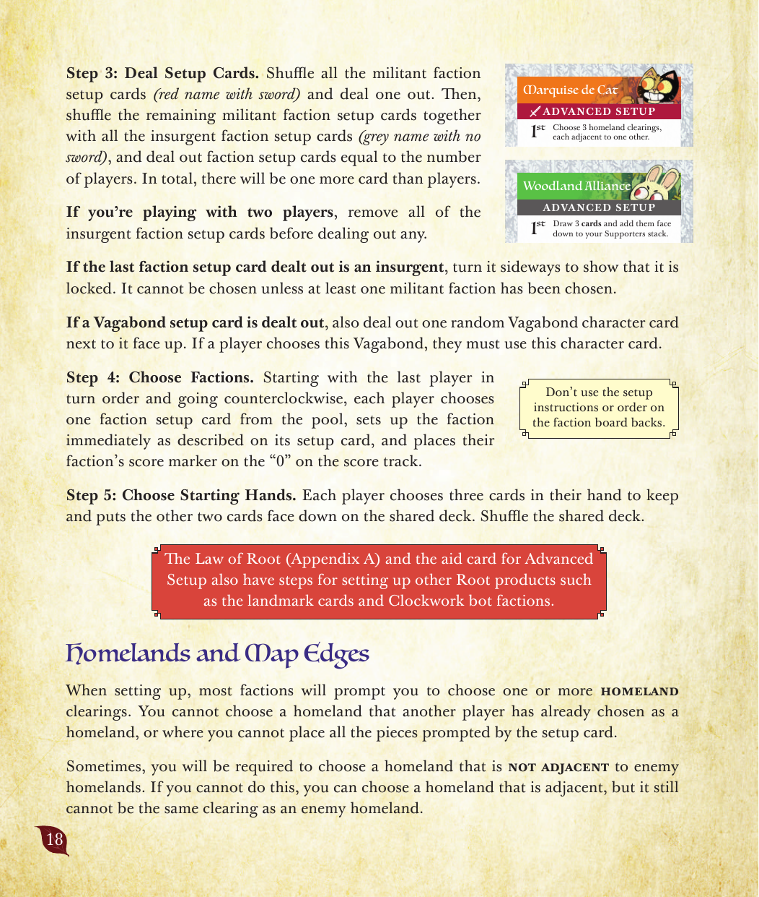
原書 p.18
本拠地とマップ端
準備の際、多くの派閥は「本拠地」となる開拓地を1つ以上選ぶよう求められる。すでに他のプレイヤーが本拠地として選んだ開拓地や、すべての駒を配置できない開拓地は本拠地に選べない。
時には、敵の本拠地に隣接していない本拠地を選ぶよう求められることがある。それができない場合は、敵の本拠地に隣接していてもよいが、同じ開拓地を敵の本拠地と共有することはできない。
同様に、敵の本拠地との間に開拓地が2つ以上ある本拠地を選ぶよう求められることがある。それができない場合は、敵の本拠地に隣接していない本拠地を選ぶ。可能であれば、それも満たすようにする。
マップ端の開拓地を選ぶよう求められた場合は、直感的に解釈してよい――地図の周囲を囲む縁の絵柄に接している開拓地であれば該当する。
ルールの微調整
『ROOT』は長年の間に大きく成長し、当初は想定していなかった雇われ者や新しい派閥デザインが登場した。そこで、古い文言の一部を明確にし、新旧の組み合わせがうまく機能するよう新しい用語をいくつか追加した。
開始隅開拓地
甲鉄衛団・百獣王国の準備手順では「開始隅開拓地」という用語を使う。これは猫野侯国の「拠点」、鷲巣王朝の「開始の止まり木」、蜥蜴教団の「開始の祭壇」、地底公領の「開始トンネル」など、隅の開拓地にある派閥固有の建物・トークンを指す。古い派閥はこれと似た用語を使っていないことがある。例えば鷲巣王朝は、他のプレイヤーの開始隅開拓地と対角の隅の開拓地に止まり木を置くよう定めているが、具体的に猫野侯国の拠点の対角を意図している。5人以上のプレイで開始隅開拓地のある派閥を使う場合は、高度な準備を使う必要がある。
派閥駒
「派閥駒」という用語は、ある派閥が所有する兵士・パウン・建物・トークンを指す。アイテム・雇われ者・河の拡張の傭兵駒、放浪部族の「同盟」している派閥の駒は派閥駒ではない。『根の法典』の多くのルール――例えば放浪部族の「援助」アクション、黒烏結社の「露見」アビリティ、甲鉄衛団の「野営」アクション――が、現在は「派閥駒」「派閥兵士」などの用語で記述されている。
強制と『裏切り者と支持者』デッキの偽の命令カード
「強制」という用語は、自分のアクションによって他のプレイヤーに何かをさせる場合に使う。『裏切り者と支持者』デッキに含まれる「偽の命令」カードには、この用語を使って次のように記述されている――「鳥歌フェイズに、このカードを捨てて、敵を強制し、自分が選んだ開拓地から、自分が選んだ別の開拓地へ、その派閥の兵士の半数（切り上げ）を、支配を無視して移動させる。」効果自体は元の文言と同じだが、新しい用語「強制」と前述の「派閥駒」を使って明確化されている。
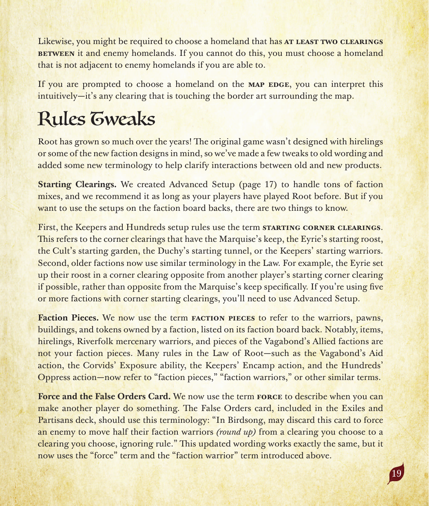
原書 p.19
追加コンポーネント
ゲームを更新するための追加コンポーネントがいくつか含まれている。
- »これまでに発売されたすべての古い派閥に対応する得点マーカーが含まれている。これらは現行の得点マーカーよりも少し背が高い。
- »山の拡張で使われる関係マーカーの2セット目が含まれている。これにより放浪部族2体を使ったゲームにも対応できる。
推奨派閥構成
原書では、プレイ人数（2人・3人・4人・5人）別に、本拡張の百獣王国・甲鉄衛団を含めた推奨派閥構成が図解で示されている（雇われ者は任意で追加できる）。具体的な組み合わせは原書ページの図版を参照のこと。基本的な考え方は、百獣王国・甲鉄衛団を基本ゲームおよび他拡張の派閥と組み合わせ、ゲームバランスのよい構成にする、というものである。
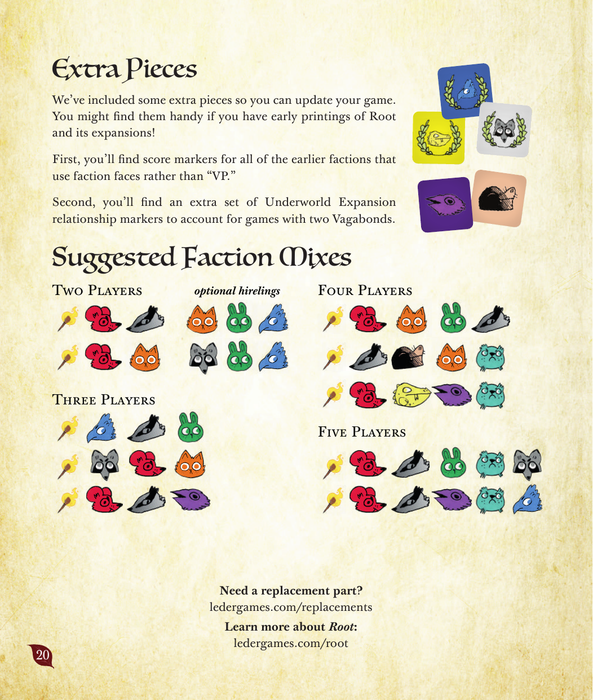
原書 p.20